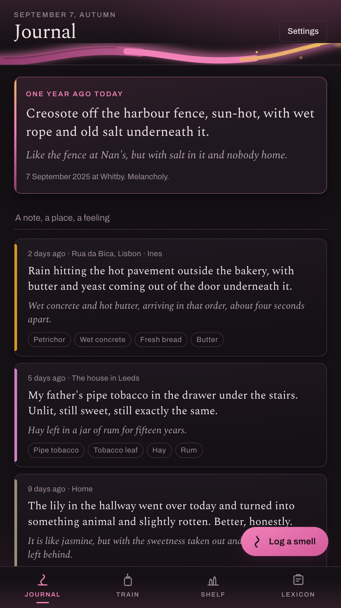
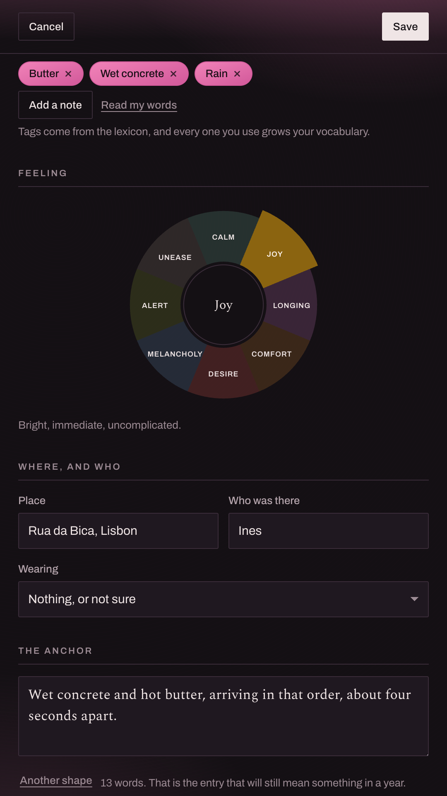
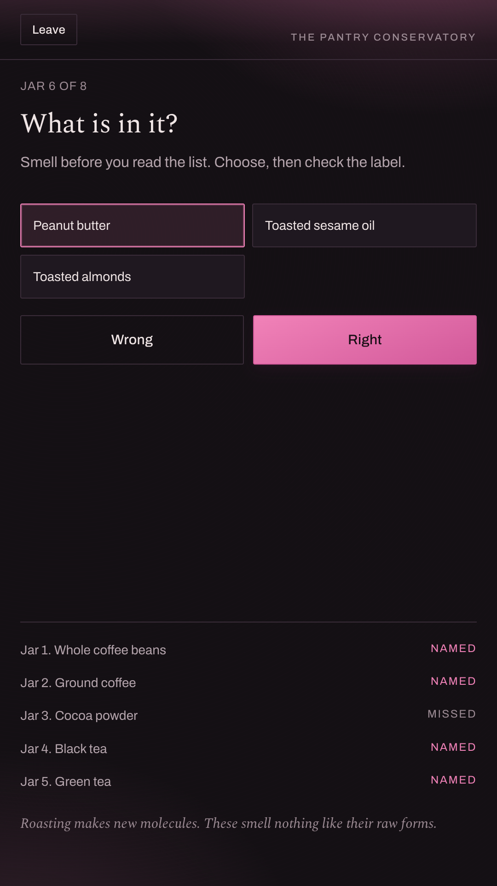
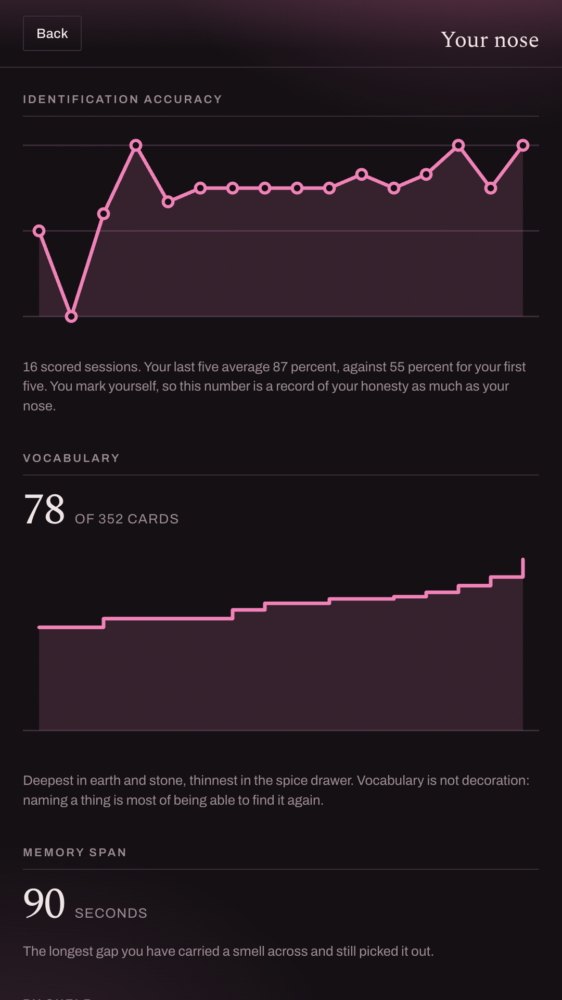
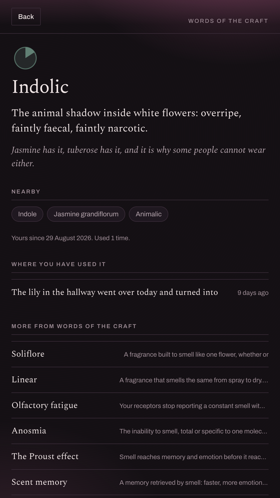
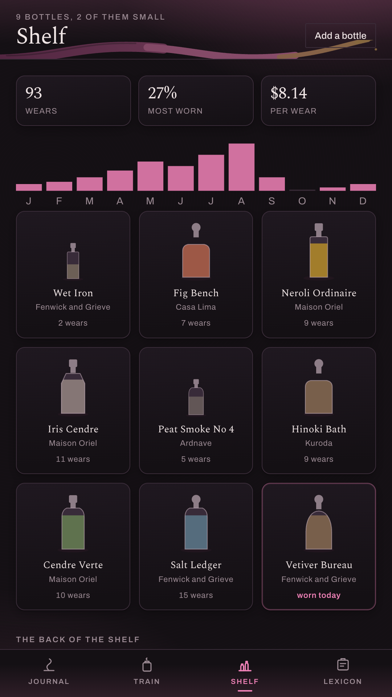

Journal the smells you want to keep. Train your nose on what is already in your kitchen. Track what is on your shelf and how often you actually reach for it.
Get it on Google PlayFree and complete. No account, no subscription, and no internet permission at all.

You have ten thousand photographs and not one smell.
Smell is the sense wired straight into memory's basement. One molecule of a stranger's perfume on a train and you are, involuntarily, in a hallway in 1998. We built whole industries for documenting what we see and hear, and almost nothing for the sense that time travels.

A photograph does the remembering for you. A smell will not sit still for that, so Sillage asks for the next best thing: one sentence of comparison, written while you can still smell it. Articulating a smell is what files it somewhere you can find it again.
The app teaches this without lecturing. The anchor field hands you a sentence shape, and a different one every time you ask.
Thirty eight sessions across two tracks, from four minutes to twelve. Foundations works on four things you already own: coffee, a lemon, cloves and mint. The Pantry Conservatory then takes eight shelves of your own kitchen, four jars at a time, and widens to eight.



Bottles, decants and samples, with the notes, the sillage, the seasons and a three line take: opening, heart, drydown. One tap logs a wear, and about a fortnight later the numbers start telling you things about yourself that you would have denied.
Every bottle is drawn in code from its own name and notes, which is why the shelf looks like a shelf without the app ever asking for your camera.

The lexicon is the connective tissue. Tag an entry with a note and the word is yours. Write it into a sentence and it is yours too. Each card lists every entry and every bottle where it turns up, which makes it a map of your own nose rather than a glossary.
The Animalic Cellar
Wet hair, wet dog, coconut and violet. Genuinely strange, and restricted for allergy reasons.
The smell people mean when they say a fragrance smells like scalp.
Architecture, not a promise
The app does not request the INTERNET permission, so Android will not let it open a connection even by accident. You can check that on the Play listing before you install. No account, no sync, no analytics, no crash reporter, no advertising identifier.
There is no camera permission and no photo picker. Every bottle on your shelf is drawn from its own name and notes, which is a better looking shelf than most people's camera roll and costs you nothing.
Decoding needs a brand by brand database that nobody outside those brands can verify. Shipping a half correct one would be worse than not shipping it, so the feature is absent and this paragraph exists instead.
Rain triggered resurfacing needed a live forecast, and a forecast needs a network. Old entries come back by anniversary and by the same week of the year, which turns out to be most of what made the idea good.
The drills are written as skill practice, in the same spirit as ear training or wine tasting. Sillage makes no medical claim. If your sense of smell has changed suddenly, that is a conversation for a doctor and not for an app.
Weird, uncontested, and the only app your nose has ever had.
Get it on Google Play